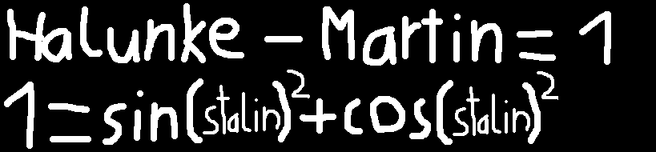

1.
As you can see, by taking the "s" from "Kruse", the "t" from "Martin", the "a" from "Martin", the "l" from "Felix", the "i" from "Felix", and finally the "n" from "Martin", Felix's entire name can be rearranged to create the new name "Stalin", former general secretary of the Communist Party of the Soviet Union, and by rearranging the rest of the letters of Felix's name, you get Mr Feix Krue.


2.
We even used high-complex math equations to discover Felix's little evil secrets by counting up the letters of Felix's name as well as the letters of the word "Halunke", which is a term often used to describe Felix. We found out that the letters count up to 6 letters in Felix's name and 7 letters in the word "Halunke". By substracting Felix with "Halunke" you get 1 and according to mathematics, 1 is equal to the sine of "Stalingrad" squared + the cosine of "Stalingrad" squared.